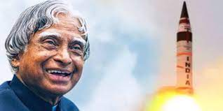
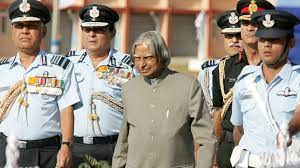
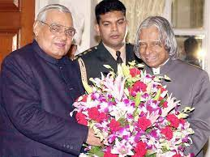
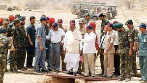
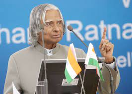

Contributions In ISRODr. Kalam started his career at ISRO, where he contributed to India's space program. He was involved in the development of satellite launch vehicles and was instrumental in the successful launch of India's first indigenous satellite, Rohini, using the Satellite Launch Vehicle (SLV). |
 |
|  |
Contributions is DRDODr. Kalam served in DRDO and played a key role in the development of strategic missiles. He was the Chief Executive of the Integrated Guided Missile Development Program (IGMDP), which led to the development and operationalization of missiles like Agni and Prithvi. His work in DRDO significantly advanced India's missile technology. |
Chief Scientific Advisor to the Prime MinisterFrom 1992 to 1999, Dr. Kalam served as the Chief Scientific Advisor to the Prime Minister of India. In this role, he provided valuable advice on scientific and technological matters to the government, contributing to the country's overall development. |
 |
|  |
Nuclear Tests (Pokhran II)In 1998, as the Chief Project Coordinator, Dr. Kalam played a crucial role in coordinating India's second nuclear test series, known as Pokhran II. These tests demonstrated India's nuclear capabilities and led to the country's recognition as a nuclear-armed nation. |
President of IndiaDr. Kalam was elected as the President of India and served from 2002 to 2007. During his presidency, he focused on education and youth development, encouraging students to pursue careers in science and technology. He became known as the "People's President" for his approachable and inspirational leadership. |
 |